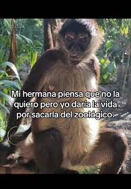

Se que no he sido el mejor hermano, que te falle muchas veces, que siempre me tuviste envidia por ser el mas lindo, pero eso cambio cuando llego Luciano y los dos pasamos a la bolsa de los feitos ajajajaj se que mis elecciones en la vida nos han tenido distantes por muchisimos años, que muy probablemente nuestras vidas tomen caminos separados algun dia, pero queria que sepas que...

No encontre fotos nuestras asi que puse a esos dos que creo que son peronistas. Ultimamente pense mucho en que significa ser un buen hermano y creo que en simples palabras es ser un amigo, ser una persona a la cual elijan sin el parentezco, ahi me di cuenta que no me eligirian ni vos ni Lucho y me gustaria que eso cambie. Poder ser un buen hermano y amigo para ustedes y asi elegirme cuando me necesiten y yo poder estar ahi para ustedes. Sin duda quiero que sepan que pueden contar conmigo para todo, que siempre voy a estar y que los amo mucho.
Recuerdo las veces que trataba de hablar con vos y siempre te tildabas, te quedabas mirando ese punto fijo, jajajaja nunca supe que pasa por esa cabeza... si pensara que tiene que ir a una feria americana, si le dio de comer a sus gatos, si tiene hambre y piensa en comida o si solo no le importa lo que le digo y tiene un monito con dos platillos en la cabeza jajajaja
Tengo muchos recuerdos nuestros en el colegio... me defendias, me cuidabas, siempre estabas ahi para mi, fuiste una excelente compañera y no podria haber pedido una mejor hermana. Aunque estamos grandes, cada uno en sus proyectos, siempre pude y puedo contar con vos. Siempre ofreces una mano aun cuando no te sobra nada. Solo pensas en ayudar y eso me enseño mucho sobre el valor familiar.
Se que no siempre estaremos el uno para el otro, que la distancia ira aumentando, solo quiero que tengas algo en claro: no importa la distancia, no importa el momento, siempre pero siempre voy a estar ahi para ayudarte, alentarte o simplemente para molestarte. Quiero que mi hermana sepa que me arrancaria el corazon sin dudarlo por ella... Porque su felicidad siempre fue y sera una parte esencial de la mia. Aunque la vida pase, aunque los años cuesten, ella siempre va a tener en mi un refugio, un abrazo y una certeza: Jamas va a estar sola.